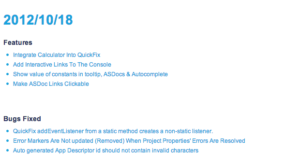

Update! 2012/10/18
This is our first update since the release this week. We already have fixes and new features!
Enjoy!
Release Notes

Learn more about these issues via our Release Notes in our wiki: http://fdt.powerflasher.com/docs/FDT_Release_Notes_(Latest)#2012.2F10.2F18